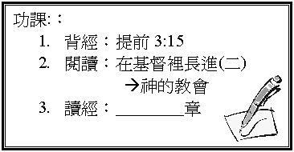

引言 教會是甚麼？
記不記得第一次返教會的原因和心態？
一．教會真理
1.
教會是神的家（提前3:15）
A.
屬於誰？
B.
是否屬於某一個人或某一間機構？
C.
住了誰？
E.
在林前11:17、30-34
;
提後3:6
中，有些人抱什麼心態返教會，有什麼不對的地方?
2.
教會是真理的柱石（提前3:15）
A.
如果教會單是舉辦旅行，彼此認識的活動，而不講真理，人又不尋求真理，會怎樣？
B.
最近返教會，有甚麼真理很深刻？
3.
教會是基督的身體
(弗1:22-23、4:11-16)
A.
一個身體包括有甚麼部份/元素？ 誰是頭？ 我們是甚麼？
B.
身體器官，互相之間有甚麼關係？ 可否單一存在？
C.
若彼此能發揮功用，互相支持，這個身體會怎樣？
D.
試分享如何在這個身體上彼此支持和彼此建立。
二．聚會介紹
1.
崇拜
2.
主日學
3.
團契
4.
祈禱會
5.
其它：__________________________
三．奉獻學習(瑪3:1-11)
1.
聖經教我們對神的家有應負甚麼責任？ 何謂「十分之一」？
這「十分之一」是否屬於自己？ 何以見得？
2.
人不奉獻又會如何？ 奉獻又有甚麼福份？
